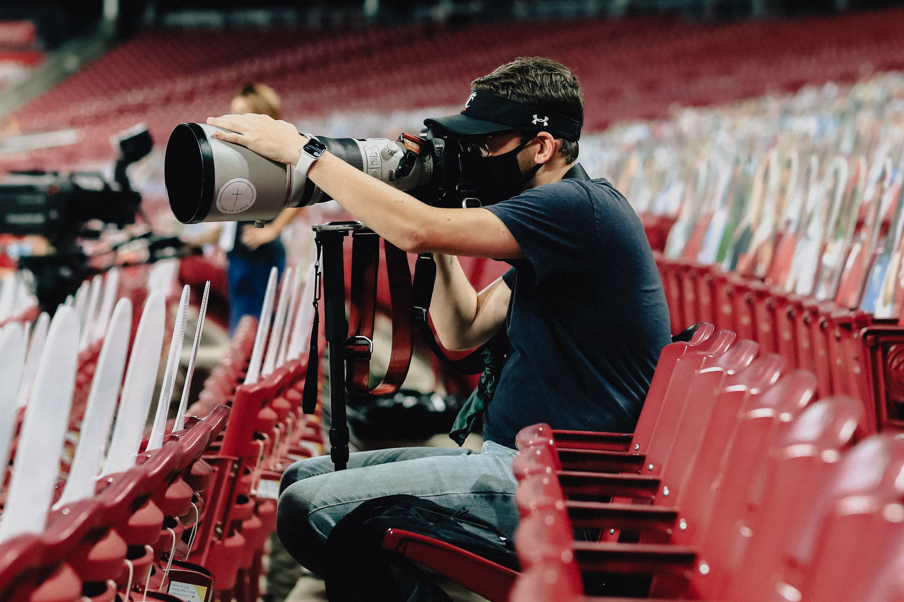

|  |
|---|
| Heyo, I'm Drew! Check out my WEBSITE! I can't wait to do work with you! I am located in Cincinnati, Ohio and I've been shooting professional sports since 2017. I grew up playing sports and ballin has always been my passion. After a few injuries and two moves across the country, I have kept my passion for sport by taking photographs. I love being able to travel to new stadiums and capture the emotions of the game. |